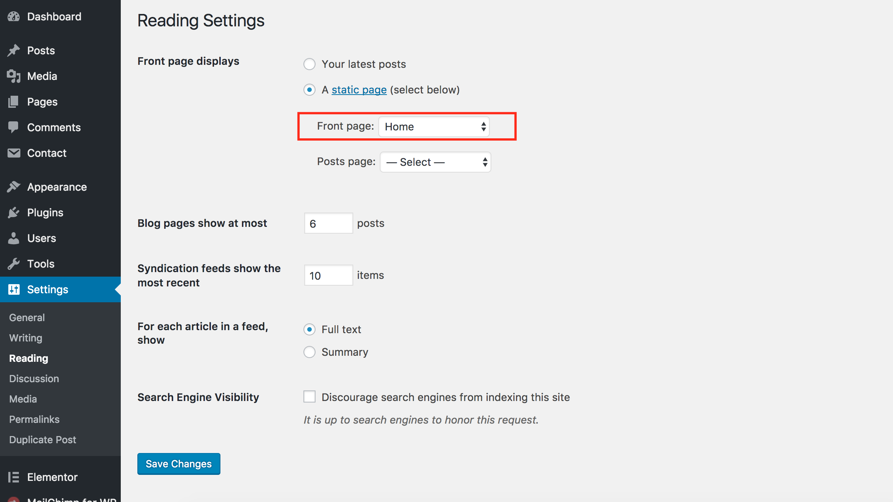

Welcome to news247 Theme
Thank you for purchasing news247 Wordpress Theme. If you have any questions please feel free to email via our support email : tripplesworld@gmail.com . Thanks so much...
Install
Minimal requirements :
- PHP 5.6+
- MySQL 5.0+
- Wordpress 3.8+
- Please make sure you have proper version of wordpress installed.
Theme Installation from dashboard
- Unzip the package downloaded from Themeforest and locate the file news247.zip
- In your Wordpress backend, go to Appearance -> Themes -> Add New (button on the top).
- Click the upload theme button that is near the top of the screen and go to the folder where you extracted the previous zip file, and select the file called "news247.zip"
- Click on "Install Now" and once completed select "Activate"
Uploading via FTP to Wordpress
- Upload non-zipped theme folder called news247 to /wp-content/themes/ folder in your WordPress installation folder on your server.
- In Available Themes section find news247 and activate it by clicking Activate button
Install Plugins
If you want the them look like demo then you have to install all plugins. Check the below screen shot:
To see the previous screen shot Click Begin Installing Plugins. You will see the the below screen shot. Select all plugins >> Select Install then press Apply. Make sure to activate all plugins
One Click Demo Import
You can easily import all demo data with this features. To see the below screen shot click Import Demo Data, wait for some times and your done!

Menus
This theme came with single top menu
- Go to appearance > menus .
- Enter new menu name and click on create menu .

- Now you can select the menu you created , to use it in theme location .
WP Mega Menu
1. After activate WP Mega Menu from Plugin area make sure to import News247 theme from template bundle -> demo data
2. From menu area make sure to save and enable News247-themes
Home and Page Templates
You can select 1 of 4 page templates included with this theme
- Homepage (default temlate)
- Blog with Full width (Blog with Full width)
- Blog with Left Sidebar (Blog with Left Sidebar)
- Blog with Right Sidebar (Blog with Right Sidebar)
After Creating Homepage then go to the settings->reading from admin area
Theme Customizer Options
You can access your theme customizer options from Appearance > Customize.
Header Logo
You can access your theme's logo customizer options from Appearance > Customize > Header.
How to import theme options
From admin area go to the news247 options -> import/export then you will find button name "Import from file". Just click the button and from bundle package you will find folder name "news247 options" then open redux_options_news247_options_backup_06-01-2015.json in text editor and copy content and paste it in the text area. See the screenshot for more details
Widgets
this theme came with 5 widgets , news247 About Me, news247 Ads Image, news247 Latest Posts, news247 Post Gallery, news247 Socail Button
How to import Widget Data
We have attached plugin Widget Importer Exporter to import widget data. If you want to use widget data then just install this plugin. Then you will get the import settings from "tools->Widget Importer & Exporter" . You can see the Select a file button. Just Press the button and from bundle package select "data-widgets.wie"
Post Options
this theme supports 8 post formats Standard , Gallery , Audio , Video , Quote , Link , Image , Aside
In order to use post formats correctly you should use post options fields :
Translation
.po and .mo files included , you can use any translation software like Po Edit , to translate the language files to any language you want .
- Open wp-config.php and replace this: define ('WPLANG', ''); with this (subsitute the language string (ar_EG) with your own!): define ('WPLANG', 'ar_EG');
- Download and install POEDIT
- Connect to your site -> open your theme/languages directory
- Download the default.po file and open it with POEDIT .
- Translate file and save it as ar_EG (the file name must match with the string you inserted into wp-config.php)
- Two files will be generated after save. ar_EG.po and ar_EG.mo
- Upload the .mo and .po files into wp-content/themes/your-theme/languages folder
How to use update news247 theme
Important Note : You can't install update news247 theme by admin dashboard. So, Please don't try to install update theme by admin dashboard
- Step 1 : First you download update news247_package_v from theme themeforest then unzip(unarchive) news247_package after that you will get news247 folder.
- Step 2 : Copy the update news247 folder then replace news247 theme folder to /wp-content/themes/ folder in your WordPress installation folder on your server.
Uploading via FTP or Cpanel
Thank you for purchasing news247 Wordpress Theme. If you have any questions please feel free to email via our support email : tripplesworld@gmail.com . Thanks so much...